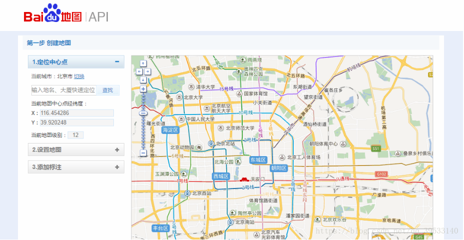
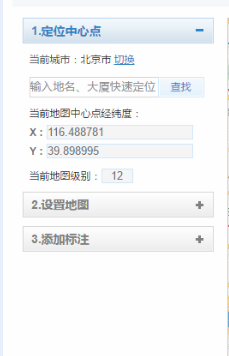
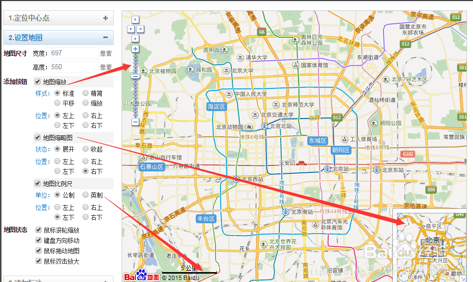
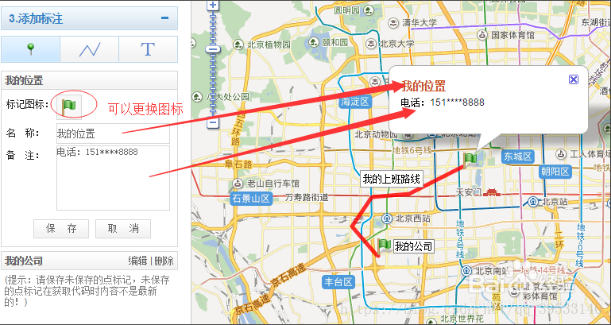
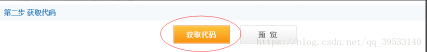
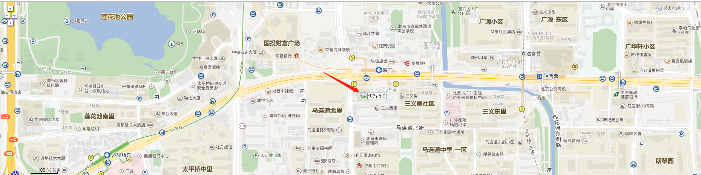
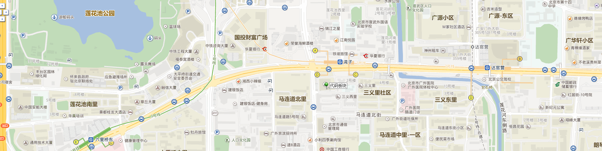

在我们做官网中经常会在网页中插入百度地图，这个其实挺简单的，下面跟着步骤一步步来。

1.进入百度创建地图的网站 http://api.map.baidu.com/lbsapi/creatmap/
2.看到图中第一步的下面有1,2,3三个小步骤，打开1.定位中心点→切换里面的城市按钮，选择你要展示的城市位置→在输入框中输入具体的地址，点击查找，就能在右边地图上显示你要显示的位置地图

3.打开2.设置地图，在里面可以设置地图的宽高，决定哪些按钮是要还是不要，按钮的位置都是可以设置的

4.添加标注→第一个图标“点标记”，可以设置具体的位置点，以点标记的形式显示在地图中，可以更换点标记的样式，也可以设置你要显示的名称和备注；第二个图标“线标记”，可以画出线条路线等；第三个图标“文字标记”，可以写些文字；

至此，一个简单的百度地图位置就设置完了，接下来就是把地图插入到网页中；
5.点击“获取代码”，就会出现一个弹框，里面的代码就是我们所要的，把代码复制到一个空的html文件中保存，命名为 “map.html” ;

6.它的src路径就写 map.html ，这样在你的网页中就可以显示你自己设置的地图了，当然地图的宽高、在网页中显示的位置要自己写css。
该文转自 https://blog.csdn.net/qq_39533140/article/details/80042315
写好了效果是出来了，但是百度标记的图标并没有，如图：

解决方法也很简单，只要找到生成的代码中的icon地址：
//创建一个Icon
function createIcon(json){
var icon = new BMap.Icon("http://app.baidu.com/map/images/us_mk_icon.png", new BMap.Size(json.w,json.h),{imageOffset: new BMap.Size(-json.l,-json.t),infoWindowOffset:new BMap.Size(json.lb+5,1),offset:new BMap.Size(json.x,json.h)})
return icon;
}
http://app.baidu.com/map/images/us_mk_icon.png
替换成这个地址即可 http://api.map.baidu.com/lbsapi/creatmap/images/us_mk_icon.png
图标 就出来了。
